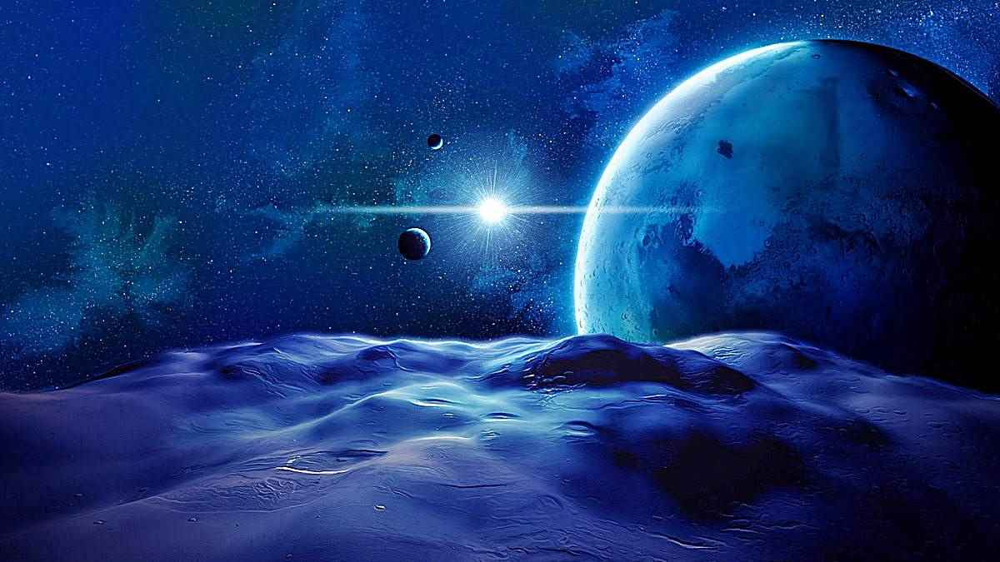
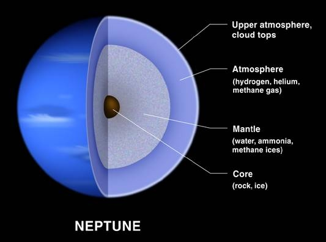

Planeta Neptuno
El planeta más alejado del Sol es también el más frío. Se trata de otro gigante gaseoso, el menor de los 4, y está compuesto por los mismos elementos principales que Urano.

Neptuno es oscuro, frío y muy ventoso. Es el último de los planetas de nuestro sistema solar. Está más de 30 veces más lejos del Sol que la Tierra. Neptuno es muy parecido a Urano. Está compuesto de una espesa mezcla de agua, amoniaco y metano sobre un centro sólido del tamaño de la Tierra. Su atmósfera se compone de hidrógeno, helio y metano. El metano le da a Neptuno el mismo color azul de Urano. Neptuno tiene seis anillos que no se ven fácilmente.
Estructura y superficie
Está rodeado por seis anillos.
Como Urano, es un gigante de hielo. Es parecido a un gigante de gas. Está hecho de una espesa mezcla de agua, amoniaco y metano sobre un centro sólido del tamaño de la Tierra.
Tiene una atmósfera densa y ventosa.
El tiempo en Neptuno
Un día dura 16 horas.
Su recorrido alrededor del Sol es tan largo que tarda 165 años terrestres en completarlo… ¡Tiene un año larguísimo!
Los vecinos de Neptuno
Tiene 14 lunas.
Es el octavo planeta respecto al Sol, y también el más alejado de él. Eso significa que Urano es el único vecino de Neptuno.
